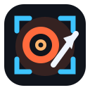

СкринСтудия
Снимок, GIF и редактор
Нажмите — и сразу снимок. Редактор откроется вкладкой.
▭
Область
Выделить кусок экрана
Alt+Shift+S
▣
Экран
То, что видно сейчас
Alt+Shift+V
↕
Вся страница
Длинный скролл
Alt+Shift+F
◉
Элемент
Клик по блоку
Alt+Shift+E
⏱
Таймер
3 / 5 / 10 сек
Ещё режимы
☰
Скролл колонки
Чат, сайдбар, лента
◎
Ждать изменение
Модалка, анимация
⊘
Без UI сайта
Cookie, sticky, чат
🎞
GIF области
5–15 секунд
▶
Видео скролла
Прокрутка страницы
🎬
Кадр из видео
Текущий кадр видео
↺
Повторить последний
Тот же режим
Alt+Shift+R